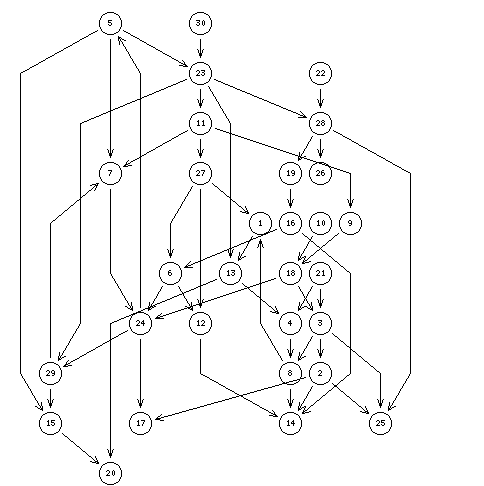

Prekernel problem of order 30
Best unique choice problematics, prekernel approach test
The example presents a random generated digraph of order 30 and size 50, i.e. a fill rate of 5.7 %.

Due to the presence of 18 L-undetermined arcs, the digraph does not support any L-determined kernel, despite the clear orientation of the digraph appearing with a layered presentation of the digraph as shown in the picture above (Thanks to the Relview system).
Two partial kernels, one dominant and one absorbent, may however be computed: ['10','19','22'] respectively ['7','14','17','18','19','22','25'].
These prekernels deliver the stable part of a dominant and an absorbent kernel that will appear with each possible logical determination - either L-true or L-false - of the 18 L-undetermined arcs.
The digraphs presents 7 odd intransitive circuits ([5, 23, 11, 27, 1, 13, 24] for instance). They don't appear however neither at the beginning nor the end of the relation.
R. Bisdorff and M. Pirlot, Computing kernels in bipolar valued digraphs. Working paper, 2005